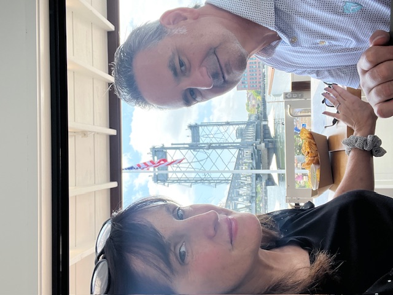
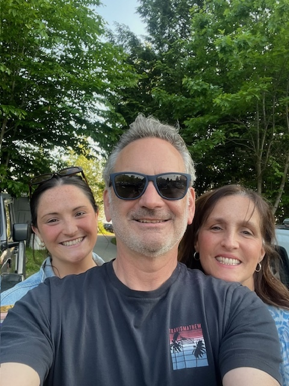

Precision Density Testing
We use high-precision drill technology to help assess wood density and the integrity of wooden utility poles with consistent, reliable field data.
Granite State Precision Pole Inspection, LLC provides precision pole testing, detailed visual inspections, and safety support with the responsiveness and accountability that larger firms often cannot match.
Owners Kevin Schneider and Kevin Keenan have each inspected more than 10,000 poles. We bring real field experience, better customer care, and competitive pricing to utility and infrastructure clients nationwide.

Granite State Precision Pole Inspection, LLC was founded by Kevin Schneider and Kevin Keenan to provide utilities and contractors with a more personal, more accountable, and more cost-effective alternative to large inspection firms.
With more than 20,000 combined pole inspections, clients get dependable fieldwork, consistent quality, practical expertise, and fast communication from people who actually know the work.
We help clients evaluate wooden utility pole condition through modern testing methods, detailed visual assessment, and practical safety support.

We use high-precision drill technology to help assess wood density and the integrity of wooden utility poles with consistent, reliable field data.
We identify visible deterioration, damage, decay indicators, hardware concerns, and safety issues before they become larger operational problems.

We support safer field conditions through hazard marker placement and detail-oriented service that helps clients reduce risk and improve visibility.
A smaller firm gives clients a team they can know, trust, and rely on throughout the life of a project.
Tell us about your project scope, location, and timeline. Granite State Precision Pole Inspection is ready to support work anywhere in the United States.